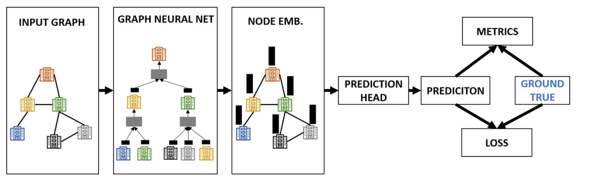
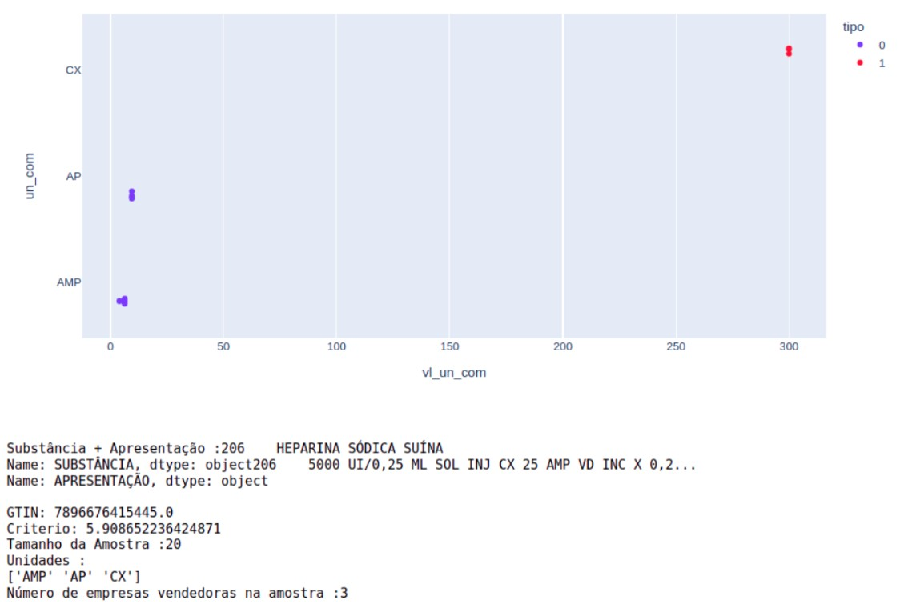
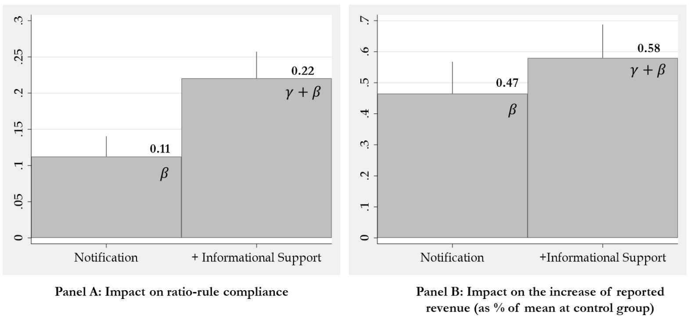
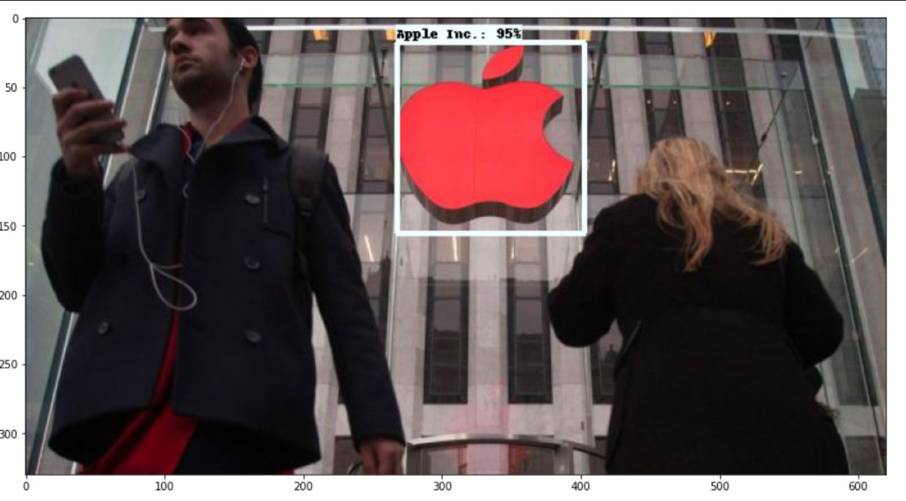
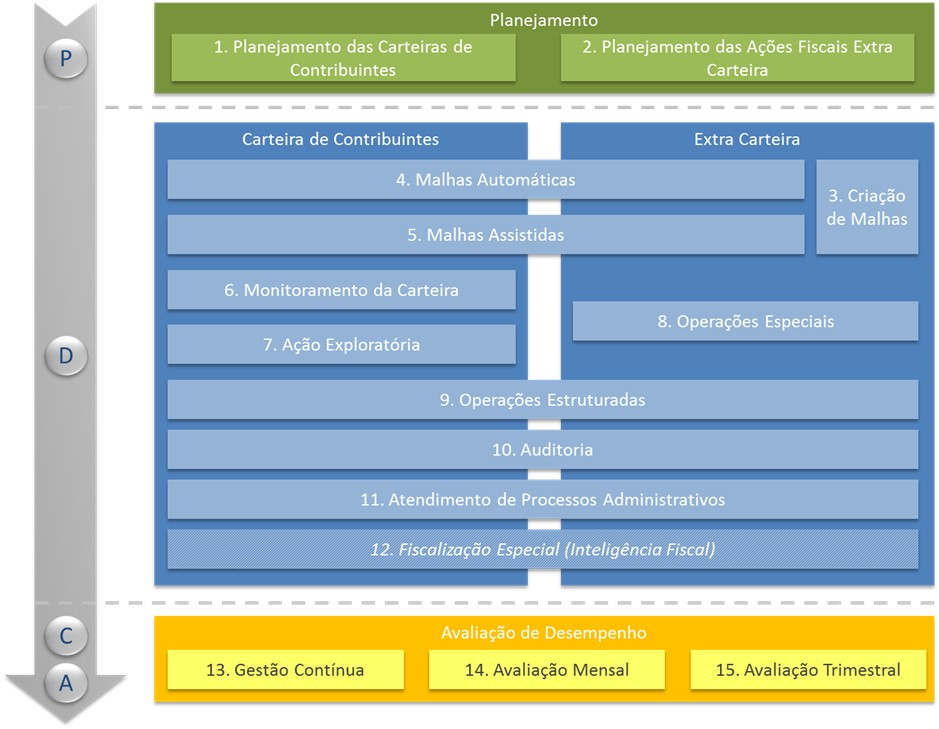
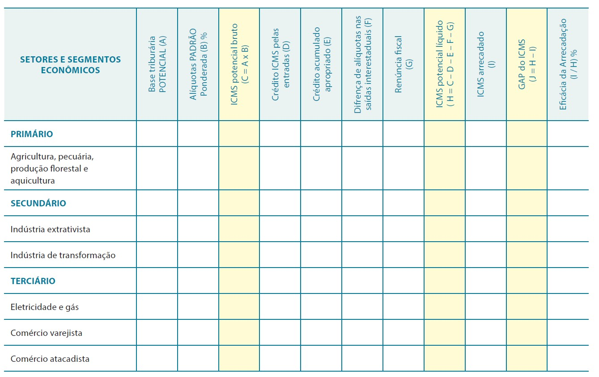
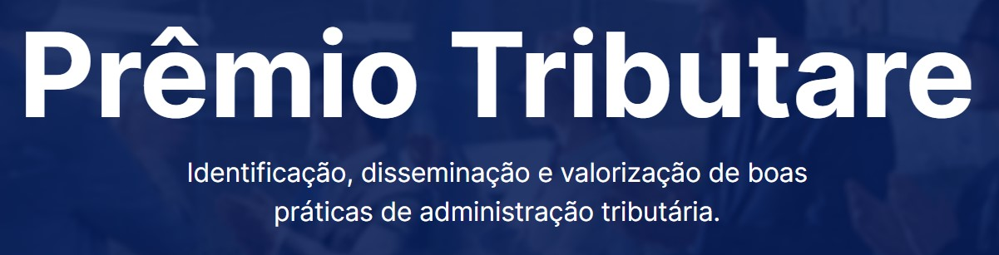
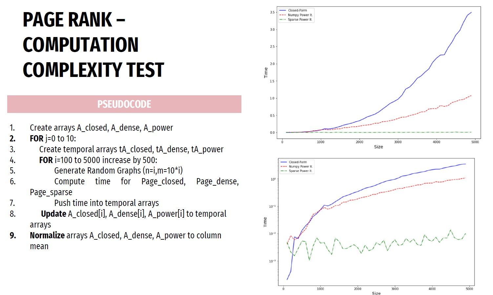

Hi!
I am a fresh data science graduate with significant data analytics experience.
An experienced programmer with a passion for learning new skills and seeking research experience to pursue a PhD in the future.
If you want to contact me for any project, reach me out by e-mail.
I will be more than happy to hear from you!
Bocconi
Identifying shell companies in the Brazilian Value Added Tax system is complex.
They exploit the lack of communication between tax authorities to engage in illegal tax practices.
Numerous methodologies have been developed to identify banking, insurance, and social security fraud.
However, few works apply to tax hoaxes, particularly in the Brazilian context.
Motivated by this gap, we developed an approach for identifying shell companies.
It consists in selecting adequate company features and applying recent Graph Neural Network architectures.
We tested different approaches to connect companies and train the model. They all indicated promising results.
Our most satisfactory model applied a modified Graph Attention Networks, built using connections among companies with the same owners, accountants, or directors.
Real data showed a 14.7% performance increase when using graph information. The method has also proven robust enough to generalize to future data.

Treasury Secretary - PI
The State of Rio Grande do Sul, in partnership with the Inter-American Development Bank (IADB),
has developed a statistical methodology for parameterizing the reference price for purchasing medications.
However, the methodology used an external database, Brasíndice.
The study found that the methodology was not robust for common errors in electronic invoices,
which can distort the price of medications and lead to evaluation errors.
To address this limitation, the Laboratory of Statistics and Data Science at UFAL,
in collaboration with SEFAZ/PI, developed a project based on mathematical models,
artificial intelligence, and natural language processing. The project successfully
extracted medication information from the ANVISA database and used Hidden Markov Models
for semi-supervised learning. The project was a feasibility test and had a limited scope,
but it demonstrated potential for future generalization and development of a technological tool
to support non-experts in machine learning.

Inter-American Development Bank
Third-party information is mostly used to massively audit firms and deter tax irregularities through notifications.
In a novel approach, the state of Piaui in Brazil has decided to use processed big data to eases the
process through which small firms comply with tax regulation.
The analyses present the main findings of a randomized control trial evaluation that estimates
the marginal impact of providing informational support on the probability that firms successfully amend
their declared revenue. Main results can be summarized as follows:
(i) Providing informational support doubles the impact of deterrence notifications on tax regulation compliance;
(ii) the impact of deterrence notification and informational support is greater among firms that are
more attentive to tax authority electronic messages; and (iii) although small firms that works
with an accountant are more effective to comply after receiving a deterrence notification,
having a professional tax filler is less important when firms also received informational support.
A back of the envelope calculation shows that a combination of notifications and informational
support increases the efficiency of the administration at collecting taxes.

Bocconi
Logo Detection using Tensorflow (2) Object Detection API
In social media analysis, sometimes images/videos can inform us more than the pure text.
For example, if you want to do a search on users of a certain brand, it is perhaps more effective to look for images/videos,
as it is unlikely that anyone will explicitly write the company in their post.
Therefore, combined with textual analyses, this methodology can improve the result of such analyses.
Model trainned with the dataset used for training was scrapped from public publications on instagran between 2015 and 2017 in some US cities. The logos used for training are: Nike, Adidas, Under Armour, Puma, The North Face, Starbucks, Apple Inc., Mercedes-Benz, NFL, Coca-Cola, Chanel, Toyota, Pepsi, Hard Rock Cafè.
Github Link

Tax Audit Department
Development of the risk & relevance matrix for normal taxpayers.
Among the activities are:
- Development of new methodologies for relevance and risk;
- Automating database queries;
- Classification Methodology in python;
- Application development for web visualization in Angular;

Treaury Secretary - PI
It basically consists of applying a methodology previously developed by the Treasury Department and the professor Nelson Leitão Paes (University of Brasilia - BR) to estimate the potential State Tax and subsequently compare it with what has been collected.
It is a top-down methodology, which starts with the state GDP by sector and uses economic/statistical methodologies to estimate the tax gap due to tax incentive and tax evasion policies.
I was responsible for improving estimates using electronic information from invoices.

UNIFIS
Work developed with the entire Planning Audit team.
In short, it consists of an innovative work within the scope of other Treasury Departments to optimize the validation of files generated by SPED - EFD.
Development of this project was essential to make it possible to dispense with DIEF and GIA-ST.
In 2022, this project got the 2nd place in the Tribuatare Award, a innovative competition among the best tax audit projects in the country.
http://premiotributare.org.br/premio-tributare-tem-seis-finalistas-veja-a-lista/

Bocconi
Google's page rank is a remarkable algorithm. Published in 1998 by Page and Brin,
it was the first method used by Google Search to measure the relative importance of a
certain webpage in its search engines. Although it is not currently used by Google Search,
it is yet a well-used metric to calculate node importance in a Graph.
As part of 2022 Bocconi's Computer Science (Algorithms) Course,
I will develop the Page Rank and Personalized Page Rank Algorithms to be applied in a unweighted graph.
Github Link

2020 - 2022
BOCCONI UNIVERSITY
Graduation Grade: 109/110
Courses: Statistics, Econometrics, Algorithms, Machine Learning I and II, Mathematical modeling, Natural Language Program, Deep Learning.
2010 - 2014
Federal University of São Carlos
I had the opportunity to work on incredible projects. During that time, I specialized in mechanical/mechatronics and materials design.
Thesis Title: Study of biofuels and their viability in internal combustion engines.
Treasury Secretary of the State of Piauí - Brazil
- Consultor in Data Science projects in the Treasury Secretary.
- Support in analytics solution to determine market reference price using data from the Electronic Invoice.
- Working with the Data Science Laboratory of the Federal University of Alagoas to develop a methodology for the reference price of medicines to increase the efficiency of purchases made by the State of Piauí.
Treasury Secretary of the State of Piauí - Brazil
- Coordinated team of tax auditors, data engineers, and data analysts.
- Coordinated real-time fraud detection project to support auditing.
- Developed new cross-checks and metrics to inhibit tax evasion, responsible for recovering more than €50 million.
- Developed validation checks on State Electronic Tax Declaration, awarded as one of Brazil's 2022 best innovations for taxation.
- Developed and deployed models to predict State Revenue using electronic invoices to help the Government cash flow planning.
- Improved methodology to calculate the State Tax Gap using electronic invoices in sectors with the most significant tax evasion from a macroeconomic point of view.
- Created Dashboards and Reports for Tax Auditing.
- Responsible for planning State Tax Audits.
- Developed and deployed models to detect Shell companies halving the time to detect fraudulent companies.
Treasury Secretary of the State of Piauí - Brazil
- Tax Audit in the largest companies in the State.
MRO - LATAM Airlines - Brazil
- Responsible for maintenance reports for Airbus 319/320/321 aircrafts.